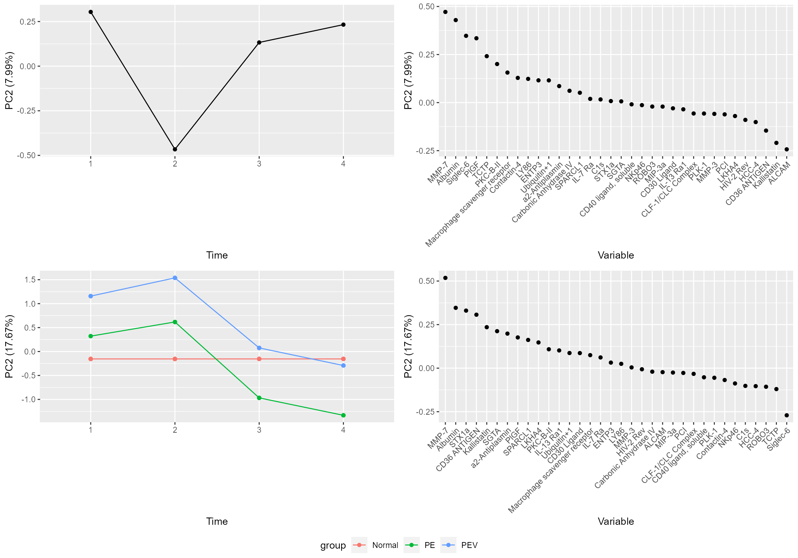
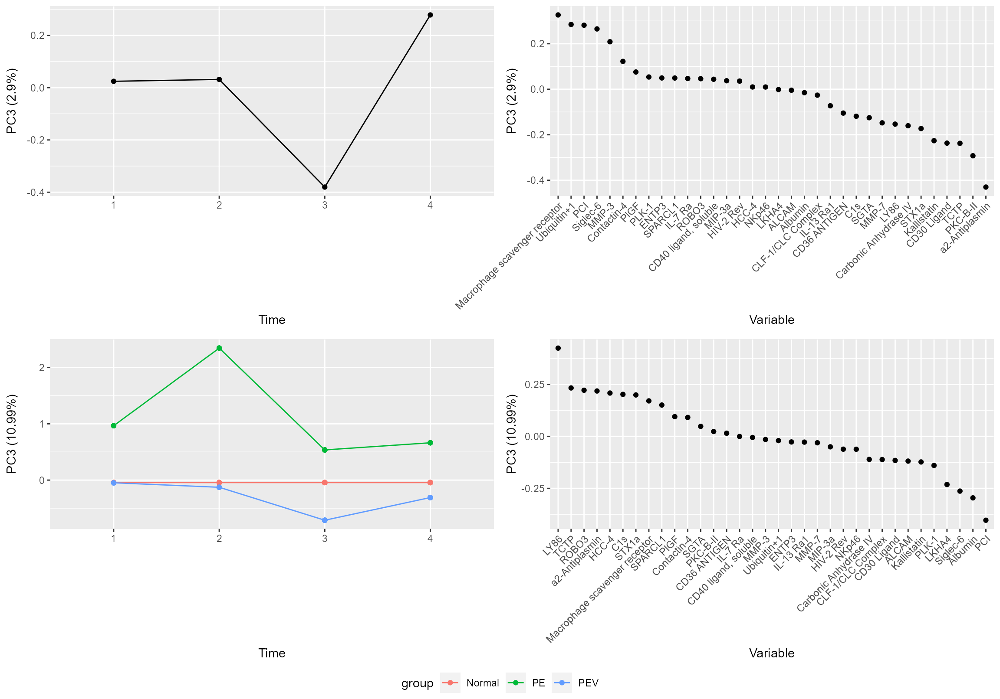
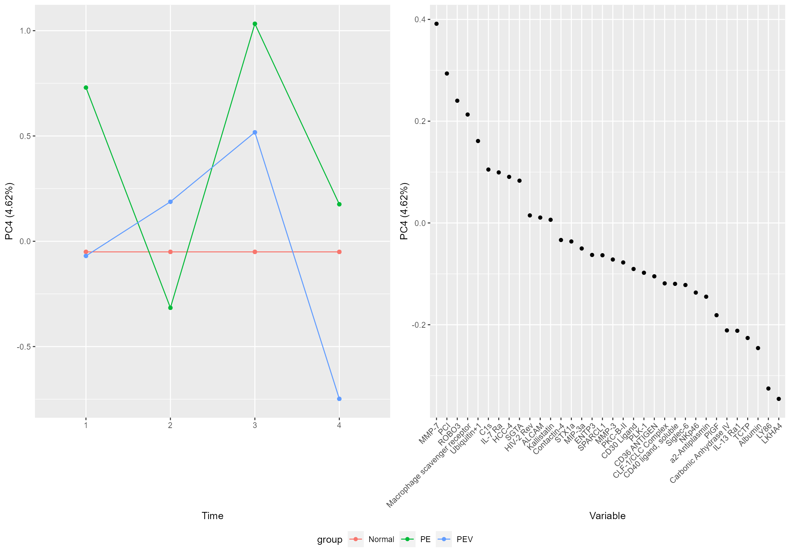

Early Preeclampsia
pregnancy.Rmd
library(RMASCA)In this example we will look at data from https://journals.plos.org/plosone/article?id=10.1371/journal.pone.0217273. This is mostly a demonstration of the RMASCA package, and not a stringent scientific analysis.
The data looks like this
head(df[,1:20])
#> ID GA GADiagnosis BMI Smoking Age Nulliparity EarlyPE EarlyPE_MVU
#> 1 1 14.9 31.9 22.5 0 28 0 1 1
#> 2 1 18.9 31.9 22.5 0 28 0 1 1
#> 3 1 27.9 31.9 22.5 0 28 0 1 1
#> 4 2 14.6 31.6 47.2 0 31 0 1 1
#> 5 2 21.6 31.6 47.2 0 31 0 1 1
#> 6 2 25.6 31.6 47.2 0 31 0 1 1
#> EarlyPE_Severe SL000318 SL002662 SL003168 SL000403 SL000591 SL000053 SL004332
#> 1 1 901.8 1232.3 1749.2 66411.5 377.3 545.7 202.1
#> 2 1 1156.3 1291.7 1840.0 64864.9 521.3 502.0 217.9
#> 3 1 1838.2 948.7 1812.8 83566.8 376.8 430.1 198.9
#> 4 1 3357.4 2930.8 1861.7 61027.7 385.7 490.8 222.6
#> 5 1 797.0 2054.9 2001.7 55158.4 324.0 604.8 204.6
#> 6 1 5399.6 1971.8 1861.5 60165.8 426.8 575.7 189.6
#> SL000592 SL000584 SL003322
#> 1 554.9 3109.4 4950.9
#> 2 730.2 2755.9 5565.2
#> 3 699.6 2881.9 5400.6
#> 4 535.6 2501.2 5124.3
#> 5 535.2 2227.7 6290.5
#> 6 680.5 2568.8 3966.3So the columns from 11 and beyond are protein levels. We convert it to long format,
RMASCA expects a data frame with at least the following columns (with these exact names)
-
timeEither factor, string or integer. Defines when a sample is taken. -
variableEither a factor or a string. The measured variable. -
groupEither a factor, string or integer. Defines the group of a participant
The variable column is already okay. Let us define the time points;
plot(df$GA[df$variable == "SL000318"])
All patients got their diagnosis before week 33.4, so let us limit ourselves to samples from before that and bulk the samples into
- Time 1: Before week 15
- Time 2: Week 15-22.5
- Time 3: Week 22.5-27.5
- Time 4: Week 27.5-33.4
df <- subset(df, GA <= 33.4)
df$time <- ifelse(
df$GA <= 15, 1,
ifelse(
df$GA <= 22.5, 2,
ifelse(
df$GA <= 27.5, 3,
4
)
)
)As for grouping, I decided to use
- Normal pregnancies (Normal)
- Early preeclampsia with maternal vascular malperfusion (PEV)
- Early preeclampsia withou maternal vascular malperfusion (PE)
Now we can set up our model. Since it’s an observational study, we can start with
model.formula <- value ~ time*group + (1|ID)In the paper, they identified the following important proteins (I’d to look up the somaIDs myself, so errors may have occurred)
- Matrix metalloproteinase-7 (also known as Matrilysin): SL000525
- Glycoprotein IIbIIIa complex (couldn’t find ID)
- Placental growth factor (PlGF): SL002640
- Vascular endothelial growth factor A, isoform 121 (VEGF-121) (couldn’t find ID)
- Sialic acid binding immunoglobulin-like lectin 6 (siglec-6): SL005217
- Activin-A (couldn’t find ID)
- Leukocyte cell adhesion molecule (ALCAM): SL003166
So to speed things up, we select these in addition to 30 randomly selected proteins.
selectedVariables <- c("SL000525", "SL002640", "SL005217", "SL003166")
selectedVariables <- c(selectedVariables, as.character(unique(df$variable)[sample(1:length(unique(df$variable)),30)]))
df <- subset(df, variable %in% selectedVariables)
df$variable <- factor(df$variable)
df <- merge(df, somaids, by.x = "variable", by.y = "SomaId")
df$variable <- factor(df$Target)And then we are ready to try RMASCA,
#> Scaling data...
#> Calculating LMM coefficients...
#> - MIP-3a
#> - a2-Antiplasmin
#> - Albumin
#> - C1s
#> - HIV-2 Rev
#> - MMP-3
#> - MMP-7
#> - PCI
#> - PKC-B-II
#> - Ubiquitin+1
#> - CD36 ANTIGEN
#> - PlGF
#> - ALCAM
#> - HCC-4
#> - CD40 ligand, soluble
#> - IL-13 Ra1
#> - STX1a
#> - Macrophage scavenger receptor
#> - CD30 Ligand
#> - CLF-1/CLC Complex
#> - Kallistatin
#> - IL-7 Ra
#> - NKp46
#> - Siglec-6
#> - PLK-1
#> - SPARCL1
#> - TCTP
#> - LY86
#> - LKHA4
#> - Carbonic Anhydrase IV
#> - Contactin-4
#> - SGTA
#> - ENTP3
#> - ROBO3
#> Finished calculating LMM coefficients!
#> Extracting LMM coefficients...
#> Finished extracting LMM coefficients!
#> Calculating effect matrix (may take some time...)
#> Finished calculating effect matrix!With a screeplot we can say something about how many components we need,
screeplot(PE.mod)
#> Registered S3 methods overwritten by 'car':
#> method from
#> influence.merMod lme4
#> cooks.distance.influence.merMod lme4
#> dfbeta.influence.merMod lme4
#> dfbetas.influence.merMod lme4
It seems like three components for time and three is probably enough for group effect also, but let us use five for now.
plot(PE.mod)
plot(PE.mod, component = "PC2")
plot(PE.mod, component = "PC3")
plot(PE.mod, component = "PC4", effect = "group")
plot(PE.mod, component = "PC5", effect = "group")
Let us add some uncertainty estimates to our model. This may take some time.
#> Warning in if (temp_limits$low > temp_limits[, 3] | temp_limits[, 3] >
#> temp_limits$high) {: the condition has length > 1 and only the first element
#> will be used
#> Warning in if (temp_limits$low > temp_limits[, 3] | temp_limits[, 3] >
#> temp_limits$high) {: the condition has length > 1 and only the first element
#> will be used
#> Warning in if (temp_limits$low > temp_limits[, 3] | temp_limits[, 3] >
#> temp_limits$high) {: the condition has length > 1 and only the first element
#> will be used
#> Warning in if (temp_limits$low > temp_limits[, 3] | temp_limits[, 3] >
#> temp_limits$high) {: the condition has length > 1 and only the first element
#> will be used